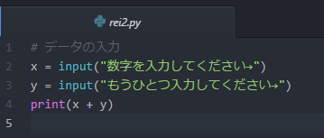
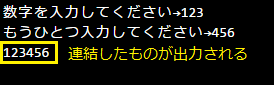
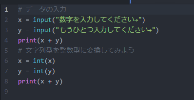
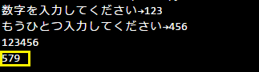
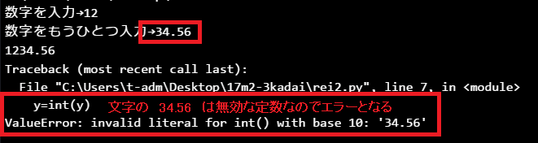
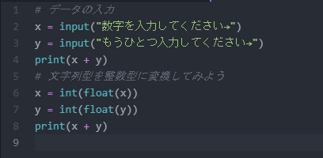

標準体重は （身長-100）×0.9 として計算してください。変数名は自由。

input関数を使うと、プログラム実行中にキーボードからデータを受け取ることができます。受け取ったデータは数値であっても文字データとして扱われます。
値（データ）にはいくつか型があります。大きな分類としては、数値型（int/float）、文字列型(str)、真偽値型（bool）があります。
|
変数=input() #入力されたデータを文字として受けとり変数に渡す |
文字のままでは算術演算できません。【例題2】では受け取ったデータを数値型に変換し、演算します。
数値に変換するには、int関数またはfloat関数を使います。int（）は引数を整数に変換、float（）は引数を浮動小数点数（小数を含む数）に変換します。
rei2.py ファイルを新規で作成します。
▼input関数を使って次のように記述し実行します。#コメントは書かなくてよいです。※数字はプログラム実行時にキーボードから入力します。

▼rei2実行結果

キーボードから受け付けた数値（123と456）は文字列として扱われるので、+演算によって連結されます。
▼つづけて以下のように入力します。
int関数は引数を整数に変換する関数。右辺の変換結果を変数に渡します。

▼実行結果

▼ただし、int関数は小数点を含む文字列を受け付けることができずエラーとなります。

▼小数点を含む文字列を受け取って、整数にするには、まずはfloat関数（小数を含む数値型）に渡してからint関数に渡すとエラー回避できます。

次のように「名前」と「身長」を入力すると、その人の標準体重が出力されるプログラムを作成してください。
標準体重は （身長-100）×0.9 として計算してください。変数名は自由。
rei1.pyと同様、kadaiフォルダに保存します。